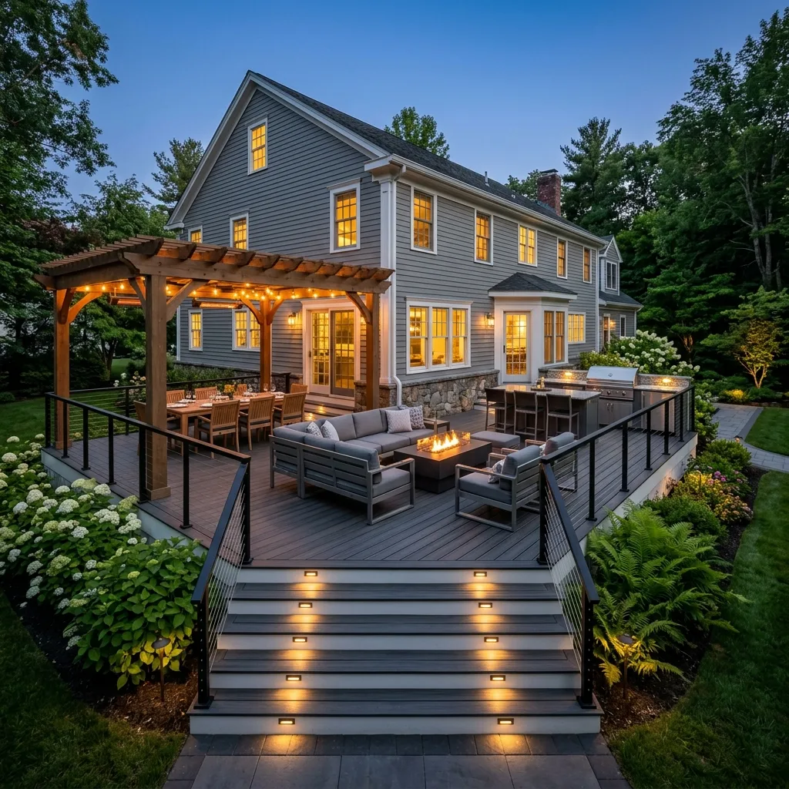

Clear steps from start to finish
We guide you through every phase of the project, taking care of the permits, layout design, and material orders so you can focus on the final results.

Initial Consultation
Every project starts with a talk at your home. We look at your yard together, discuss what you want to build, check the site's layout, and talk about how to make it work. This is an honest discussion about what is possible, not a sales pitch.
What to Expect
- A private visit to your property, scheduled at your convenience
- Discussion of your goals, lifestyle, and design preferences
- Assessment of your home's architecture and existing outdoor conditions
- Initial ideas for layout, materials, and features
- Honest conversation about investment range and project timeline

Design & Pricing
Once we understand your goals, we sketch out a layout and design. We help you choose the right materials and options, and give you a detailed estimate with clear pricing. You will know exactly what you are getting before we cut the first board.
What to Expect
- A refined design concept aligned with your home's architectural style
- Detailed scope of work with clear specifications
- Material recommendations with samples when available
- Transparent investment range with no hidden costs or surprises
- Collaborative revisions until the design feels right

Zoning & Permit Approvals
We handle all the permit paperwork. Our team drafts the construction plans, submits them to your town's building department, and coordinates inspections. Every deck is engineered to meet or exceed Massachusetts building codes so it is completely safe and compliant.
What to Expect
- Professional construction drawings prepared for your project
- Full permit coordination with your local building department
- Compliance with Massachusetts building codes and zoning requirements
- HOA coordination when applicable
- A clear construction timeline before any work begins

Selecting Your Materials
The right materials make the deck. We guide you through selecting the composite boards, railing systems, and steps. We recommend high-performing materials like Trex and TimberTech that handle cold New England winters and humid summers without requiring painting or staining.
What to Expect
- Guided selection of premium composite, PVC, or hardwood decking
- Railing options including aluminum, cable, and glass systems
- Integrated lighting design, featuring low-voltage LED for ambiance and safety
- Hidden fastener systems and architectural finishing details
- Color and texture coordination to complement your home's palette

The Build
Our experienced carpentry crew handles the construction. We build to the approved plans, keep the site tidy, minimize noise, and clean up at the end of every day. We update you regularly on progress so you are always in the loop.
What to Expect
- A dedicated project lead managing your build from start to finish
- Daily site cleanup to keep your property organized and clean
- Regular progress updates with photos and milestone communication
- Skilled craftsmen with years of experience in premium outdoor construction
- Strict adherence to the approved design, timeline, and specifications

Final Walkthrough
Before we pack up our tools, we walk the new deck with you. We inspect every board, railing joint, and step light together to ensure everything is perfect. We also show you how to register your material warranties and how to keep the composite looking new.
What to Expect
- A thorough walkthrough of every detail with your project lead
- Opportunity to review craftsmanship, finishes, and functionality
- Warranty documentation and material care guidelines
- Final site cleanup to leave your property clean and tidy
- Ongoing support. We stand behind our work long after completion
Our Promise to You
We stand behind every project we build. Your outdoor living space is an investment in your home. We protect that investment with the standards, warranties, and ongoing support you deserve.
Workmanship Warranty
Every project is backed by our comprehensive workmanship warranty. If anything falls short of our standards, we make it right, no questions asked.
Material Warranties
We work exclusively with premium manufacturers who offer industry-leading warranties of up to 25 years on composite decking and lifetime warranties on select railing systems.
Complete Documentation
You receive a comprehensive project file including warranty certificates, material specifications, care guidelines, and permit documentation, all organized for your records.
Ongoing Support
Our relationship does not end at the final walkthrough. We are available for questions, seasonal guidance, and any support your outdoor space may need now, and in the years ahead.
Frequently Asked Questions
We believe in transparency at every stage. Here are answers to the questions homeowners most commonly ask about our design-build process.
How long does a typical deck project take from start to
finish?
Most custom deck projects are completed within 2 to 4 weeks of construction, depending on scope and complexity. The full design-build timeline, from initial consultation through permitting and construction, typically spans 6 to 10 weeks. More complex outdoor living spaces with covered structures, kitchens, or multi-level designs may extend beyond this range. We provide a detailed project schedule during the Concept & Scope phase so you always know exactly what to expect and when.
What happens if unexpected issues arise during construction?
We conduct thorough assessments during the consultation and planning phases to minimize surprises. If unforeseen conditions arise, such as structural concerns beneath an existing deck or unexpected drainage issues, we communicate with you immediately to present solutions and transparent pricing before proceeding. We do not make changes without your approval.
Do I need to be home during construction?
You do not need to be home during construction. Our team is fully self-sufficient and treats every property with care. We provide regular photo updates and progress reports throughout the build so you are always informed. We recommend being available for the initial consultation and the final walkthrough to ensure every detail meets your expectations.
Ready to Begin Your Project?
Schedule a private design consultation and experience the Skills Deck Builders process firsthand. We look forward to learning about your vision.
Schedule Your Design ConsultationOr call (617) 475-0928